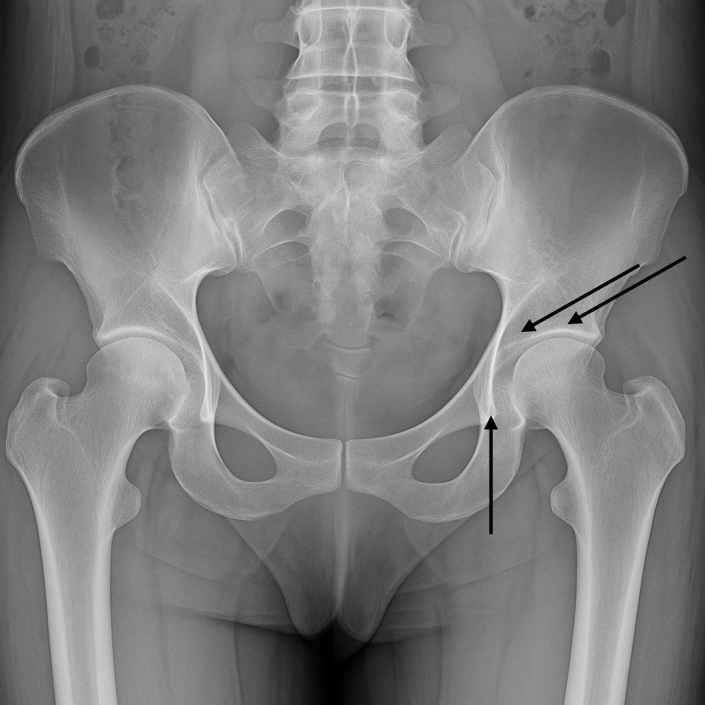

Técnicas de Radiofrecuencia para el Control del Dolor
¿Qué es la Radiofrecuencia?
La radiofrecuencia es un procedimiento médico mínimamente invasivo que utiliza corriente eléctrica de alta frecuencia para interrumpir la señal de dolor en nervios específicos. Se realiza mediante agujas especiales bajo guía de imagen, aplicando calor controlado sobre los nervios responsables del dolor.
- Procedimiento ambulatorio
- No requiere cirugía
- Alivio prolongado
- Menor uso de medicamentos
Radiofrecuencia en Columna Lumbar
Indicada para dolor lumbar crónico, causado por artrosis de las articulaciones facetarias. Se aplica sobre los ramos mediales lumbares, bloqueando la transmisión del dolor.

Radiofrecuencia en Columna Dorsal
Se utiliza en pacientes con dolor en la región media de la espalda, generalmente asociado a cambios degenerativos en las articulaciones facetarias torácicas. El objetivo es desactivar los ramos mediales torácicos.

Radiofrecuencia en Columna Cervical
Aplicada en pacientes con dolor crónico de cuello, generalmente por artrosis cervical. Se realiza sobre los ramos mediales cervicales que transmiten el dolor desde las articulaciones facetarias del cuello.

Radiofrecuencia en Articulaciones: Rodilla
Se usa para tratar dolor crónico de rodilla, comúnmente por artrosis. La técnica se enfoca en bloquear los nervios geniculados, reduciendo el dolor sin afectar el movimiento.

Radiofrecuencia en Articulaciones: Cadera
Indicada para pacientes con artrosis de cadera o dolor persistente luego de reemplazo articular. Se aplican pulsos de radiofrecuencia sobre los nervios sensitivos que rodean la articulación.
Radiofrecuencia en Articulaciones: Hombro
Útil en pacientes con dolor de hombro crónico por artrosis o tendinopatías avanzadas. Se actúa sobre los nervios supraescapular, axilar y subescapular.